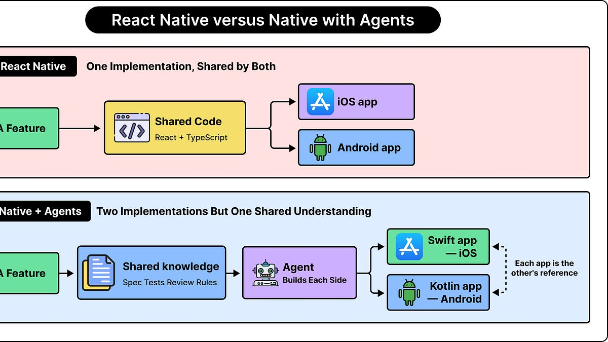
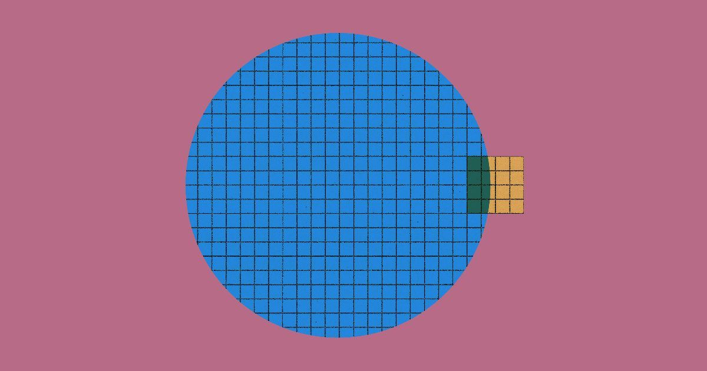
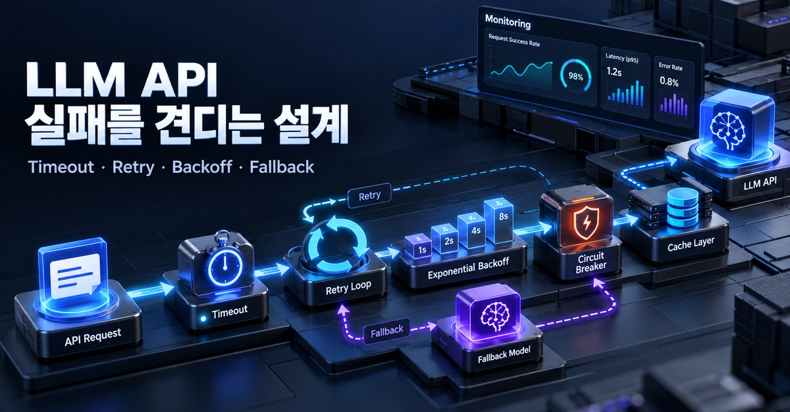
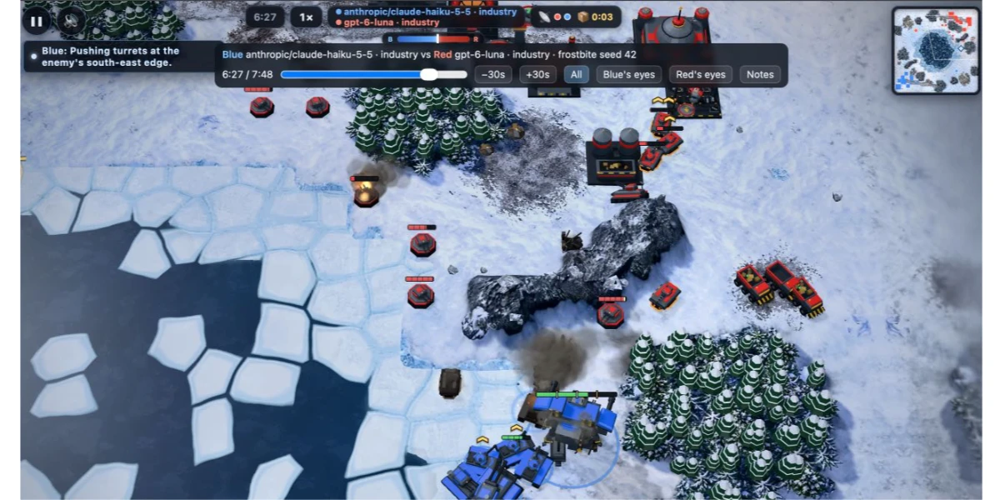
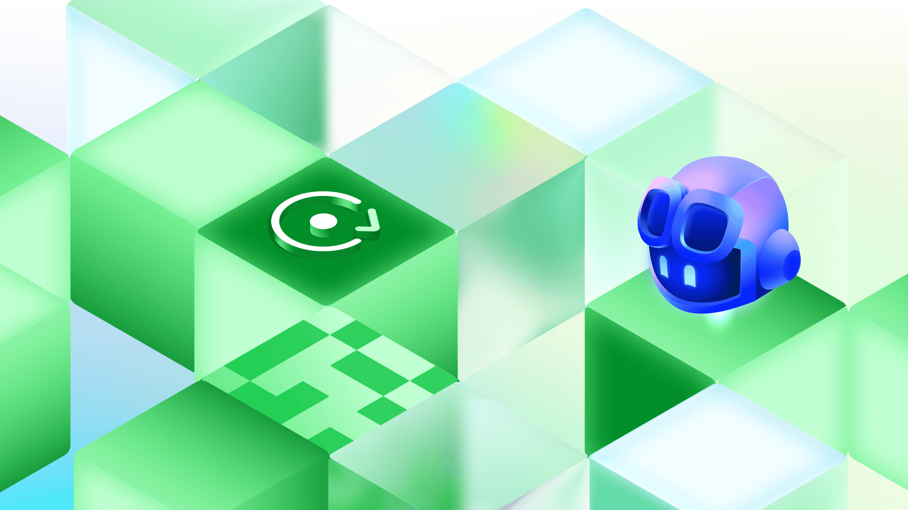
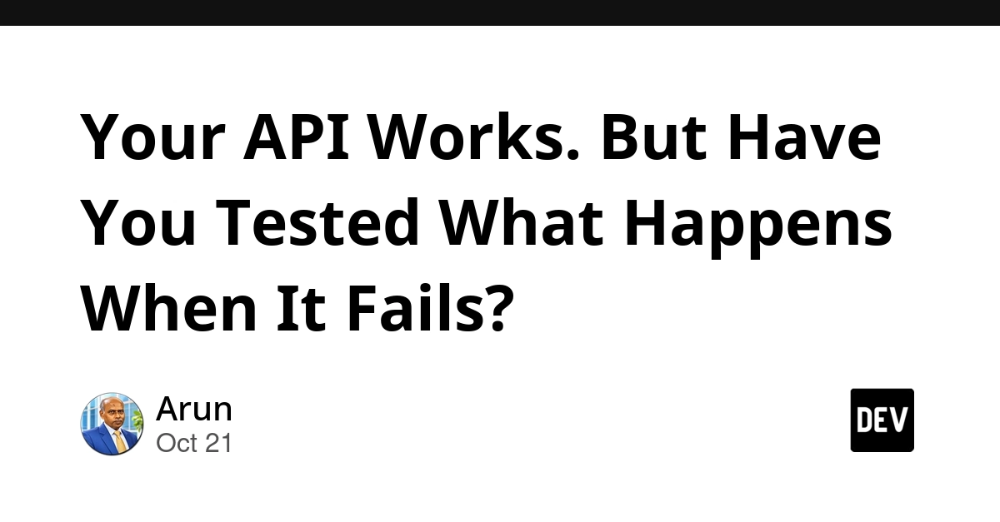
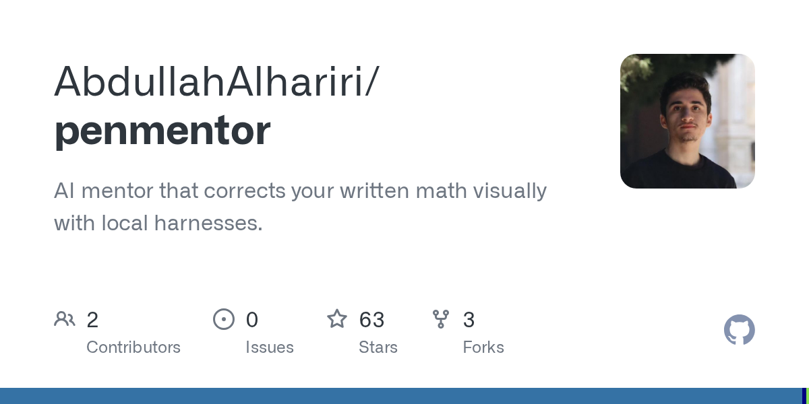
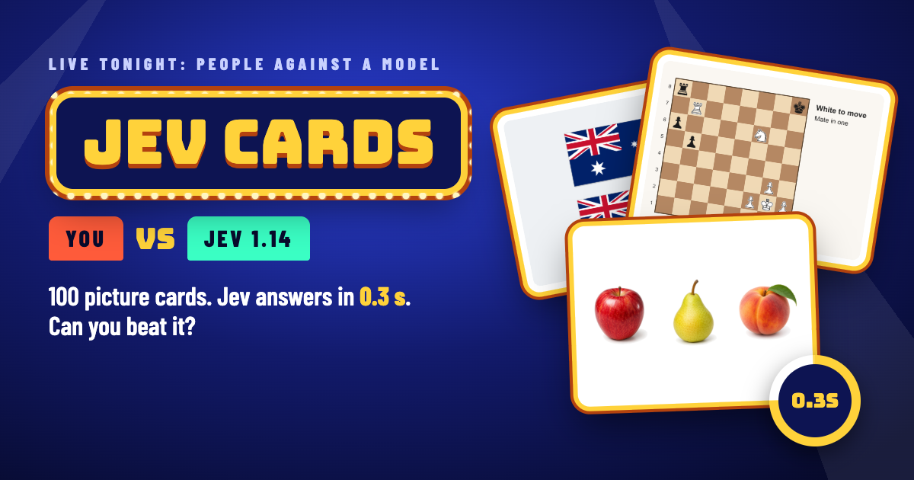
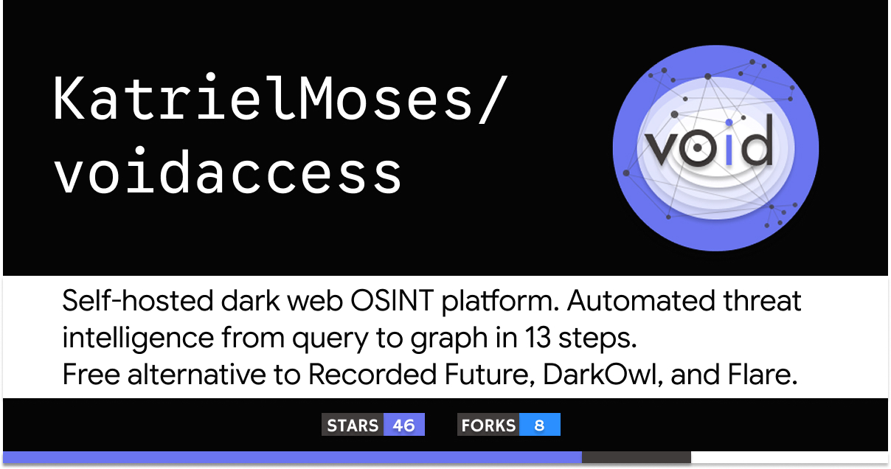

🔥 Top 3 (must read)
eMudhra Intermediate CA Compromise
The private keys of eight eMudhra intermediate CA certificates leaked. They chain to roots trusted by Mozilla, Microsoft, Apple and Chrome, so any software that bundles its own list of trusted certificates needs an update. Why it matters: your Node.js services, Docker images, and Flutter apps may carry their own trust stores. Check them and plan updates this week.
S
Tsrs: A Port of TypeScript to Rust
(HN discussion) — Cloudflare ported the TypeScript compiler to Rust. The goal is much faster type checking and builds for large TypeScript projects. Why it matters: slow
tsc runs are a daily tax on your TypeScript/React CI pipelines. Watch this one for a possible drop-in speedup.
Why Shopify Migrated From React Native
A case study of how Shopify decided to leave React Native and move to native mobile. It covers the reasons, the trade-offs, and how the migration was run. Why it matters: as a Flutter team lead, this is a good reference when people ask "should we go native?" and for how to run a big mobile migration.

🤖 AI for developers
Anthropic redesigned source-control for AI agents
Anthropic's take on how git-style version control should change when agents, not humans, make most of the commits.

LLM API 호출이 실패해도 서비스가 멈추지 않게 만드는 6가지 설계 원칙
(Korean) — Six design rules so your service keeps running when an LLM API times out, rate limits, or returns errors. One
try/catch is not enough.
How to turn Claude & Cursor into a safe Linux sysadmin assistant with an MCP server in Python
Build a small MCP server that gives the agent limited, safe shell actions instead of raw shell access.
Battle Drones – a vibe coded RTS with audio-based multiplayer
Simon Willison's latest game built with Claude. Fun note: the prompt "make it a LOT more fun" actually worked.

👔 Engineering & teams
How 3 Java Champions are using GitHub Copilot for increased productivity
Senior devs share how they use Copilot day to day and keep humans responsible for the result. Useful examples for an AI adoption talk with your team.

🎯 For me
Shopify React Native migration
Flutter / mobile: The is the one to read. It gives you real arguments for cross-platform vs native debates.
Tsrs
TypeScript tooling: could cut type-check time in your CI. Worth a test on one repo.
Your API Works. But Have You Tested What Happens When It Fails?
Automation testing: — Use mocks to test timeouts, 500s, and bad payloads, not only the happy path. Good checklist for your E2E suites.

six design principles for LLM API failures
Node.js backends with LLM calls: The (Korean, translate it) map directly to retry, timeout, and fallback patterns in a Node service.
eMudhra CA compromise
Security action item: Audit trust stores for the .
S
💡 App ideas & indie builds
SimCity, but with Permits
(HN) — A city-builder game where every build needs a permit. Problem: people do not understand why housing is slow and expensive. Inspiration: turning a boring real-world process into a game makes it click. Big hit on HN with 605 points.
Death Plan Switch
(HN) — A self-hosted dead man's switch for solo devs. Problem: if a solo founder dies or disappears, users and servers are left with no plan. Inspiration: a small, serious tool for a real fear in the indie dev community.
Penmentor
(HN) — Claude marks up a photo of your handwritten math like a teacher would. Problem: learners get no feedback on paper work. Inspiration: vision model plus a narrow learning use case makes a clear product.

Jev Cards
(HN) — A picture quiz where you compete against a vision model. Problem: fun way to learn what AI sees well and what it misses. Inspiration: "human vs model" is a simple, repeatable game format.

VoidAccess
(HN) — Open-source dark web OSINT tool, from a search query to a relationship graph. Problem: security researchers do manual, slow link-hunting. Inspiration: "query in, graph out" is a strong pattern for any research tool.

🎓 Try this
Build a tiny MCP server in Python that gives Claude Code or Cursor a few safe, limited commands on a dev box, following this guide. It is a one-evening project and a good way to learn how to give agents tools without giving them a raw shell.